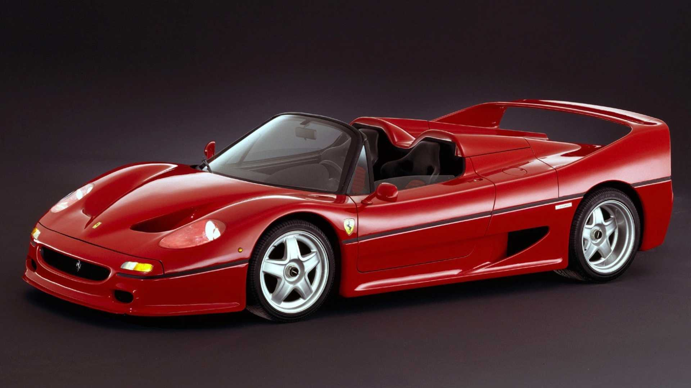
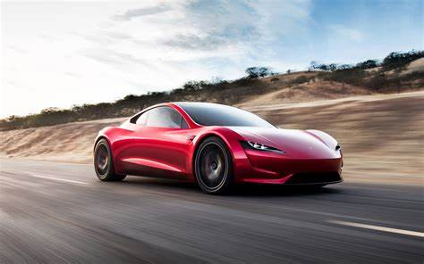
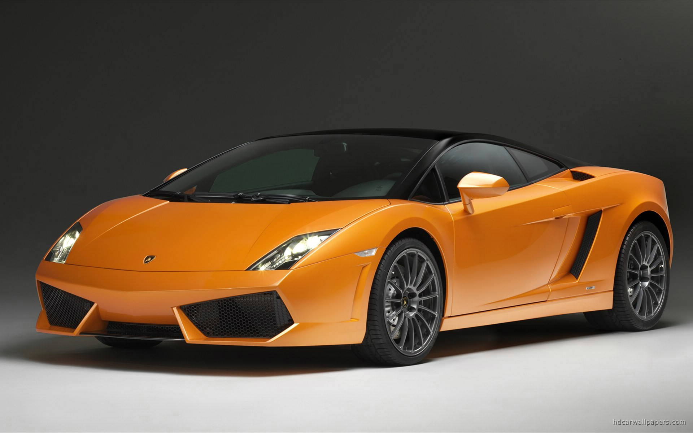
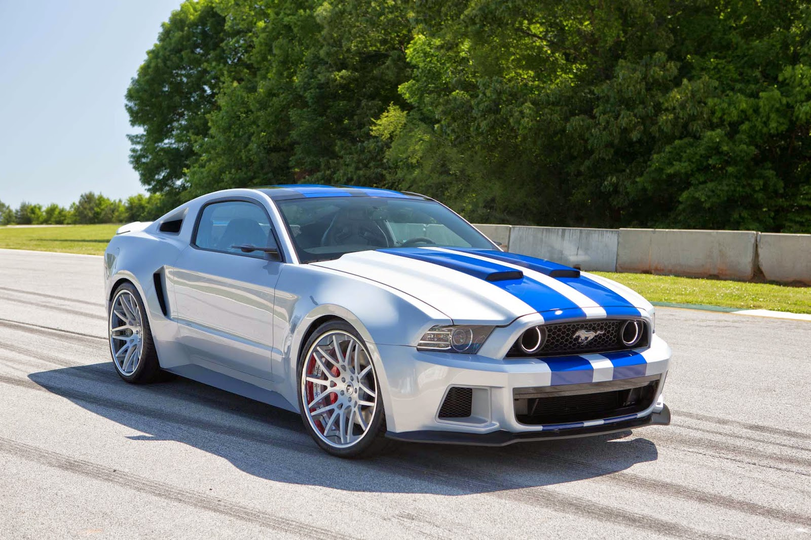
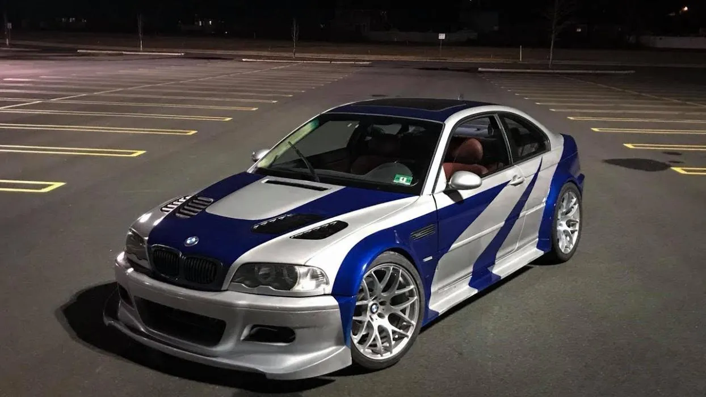
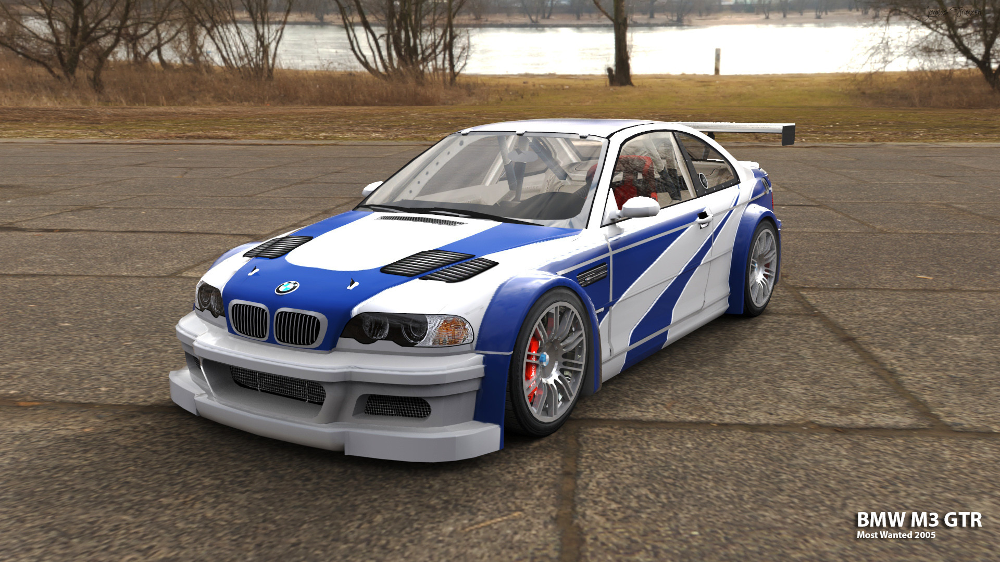

Ferrari F50
¡Potencia sobre ruedas!
El Ferrari F50 es un automóvil superdeportivo de 2 puertas biplaza con motor central-trasero montado longitudinalmente de tracción trasera, producido por el fabricante italiano Ferrari con motivo de los 50 años de la marca (1947-1997), aunque realmente fue introducido en el mercado el 8 de marzo de 1995,78 2 años antes del cincuentenario oficial.
Tesla Roadster
¡Potencia sobre ruedas!
Tesla Roadster (primera generación) El Tesla Roadsteres un automóvil deportivo de vehículo eléctrico a batería(BEV), basado en el chasis Lotus Elise, que fue producido por la firma de automóviles eléctricosTesla Motors (ahora Tesla, Inc.) en Californiade 2008 a 2012.
Bugatti Veyron

¡Potencia sobre ruedas!
El Bugatti Veyron es un automóvil superdeportivo biplaza diseñado y desarrollado por el Grupo Volkswagen y producido en Molsheim, por el fabricante Bugatti Automobiles S.A.S. desde 2005 hasta 2015.
Lamborghini Gallardo
¡Potencia sobre ruedas!
El Lamborghini Gallardo es un automóvil deportivo de lujo construido por del fabricante de autos italiano Lamborghini entre 2003 y 2013, siendo el modelo más vendido de la firma italiana con 14022 unidades. Se fabricó en las instalaciones de Lamborghini en Sant'Agata Bolognese, Italia y su nombre proviene de una ganadería de toros del siglo xviii.
El 25 de noviembre de 2013 salió el último Gallardo producido, para dar comienzo en el 2014 a su sucesor: el Lamborghini Huracán.
Lamborghini Huracán

¡Potencia sobre ruedas!
El Lamborghini Huracán es un automóvil deportivo de alto rendimiento, producido desde 2014 por la casa italiana Lamborghini, filial del Grupo Volkswagen. Es el sucesor del Lamborghini Gallardo.
Mclaren P1

¡Potencia sobre ruedas!
El McLaren P1 es un automóvil superdeportivo híbrido eléctrico enchufable de edición limitada, producido por el fabricante automotriz británico McLaren Automotive de 2013 hasta principios de diciembre de 2015.8 Tiene carrocería cupé biplaza de dos puertas diédricas, motor central-trasero montado longitudinalmente y tracción trasera.
Mustang
¡Potencia sobre ruedas!
El Ford Mustang es un automóvil deportivo muscle car de dos puertas, producido por el fabricante estadounidense Ford Motor Company desde 1964, como modelo 1964½.1
Originalmente fue concebido por Lee Iacocca como un concurso entre departamentos como algo personal y deportivo.
La séptima generación se presentaría en el mes de septiembre de 2022.
BMW M3 GTR
¡Potencia sobre ruedas!
El BMW M3 es la versión deportiva del BMW Serie 3, producido por el fabricante de automóviles bávaro BMW.
El primer M3 fue basado en el Serie E30 que se comercializó en el año 1986 y hasta 2018; cada Serie 3 tuvo su versión M. Desde el E30, BMW ha ido aumentando caballos y cilindros, desde los 4 en línea hasta el E92 con un motor V8. BMW M GmbH anunció en el año 2013 el fin de la producción del M3 Coupé y afirmó que su sucesor será el BMW M4.
Actualmente, el M3 se vende como sedán y el M4 como coupé, al igual que las series 3 y 4.
Este vehículo de la imagen está basado específicamente en el juego Need For Speed Most Wanted, en el cual es el carro del protagonista del juego ya mencionado.
Acá les dejaré una imagen del vehículo en el juego.
BMW M3 GTR (Need For Spéed Most Wanted)
Foto tomada en el juego Need For Speed Most Wanted